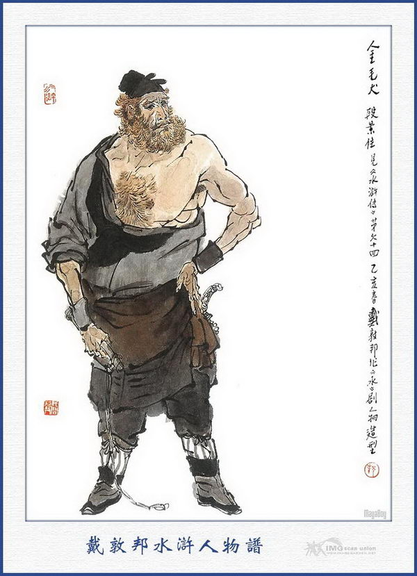
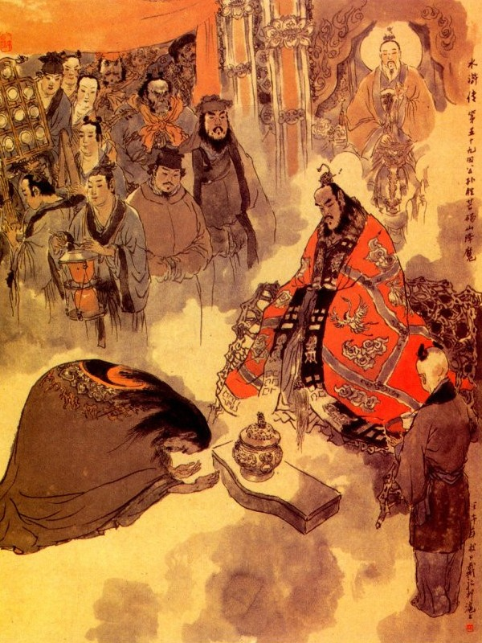
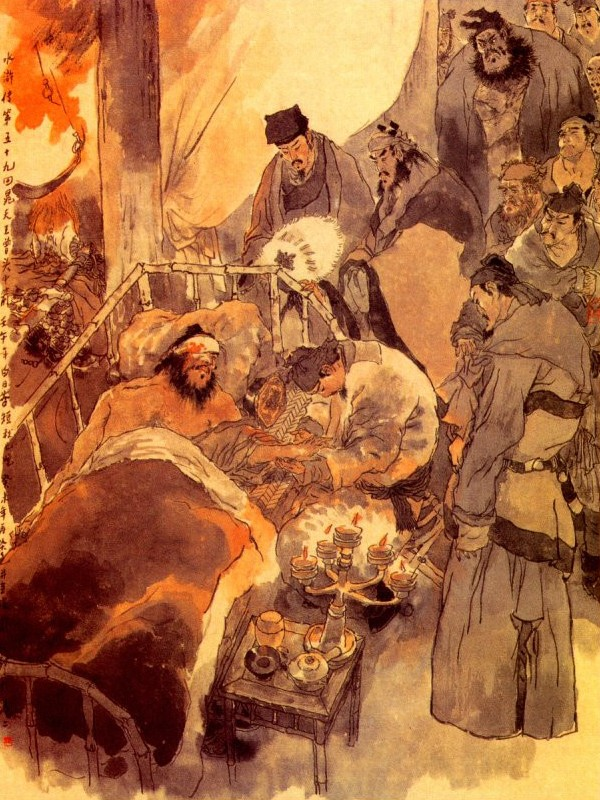
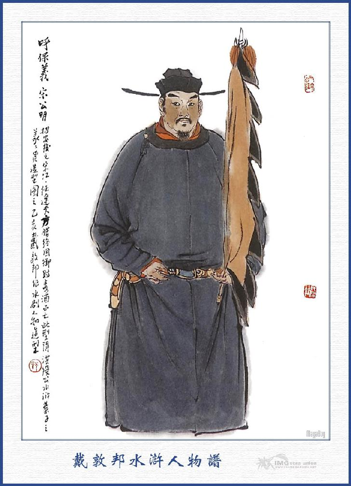

Tống Giang lui quân đóng trại rồi sáng hôm sau Công Tôn Thắng bàn với Tống Giang rằng:
- Nay ta nên bày trận Bát Quái, theo như thế trận bằng đá, của Gia Cát Khổng Minh đời trước. Trận ấy có bốn mặt tám phương, chia làm tám tám sáu mươi tư đội, khoảng giữa có viên Đại Tướng coi, thế trận bày ra bốn đầu tám đuôi, quanh bên tả, vòng bên hữu, then Trời Đất gió mây, dựa đúng hổ, chim, rồng, rắn, đợi khi bọn kia xuống núi thì hai bên mở ra cho họ thẳng xông vào trận rồi cứ nom hiệu cờ Thất Tinh mà biến ra thế Trường Xà. Bấy giờ tôi sẽ dùng phép để đánh khiến cho bọn họ quanh trước quanh sau, hết đường tiến thoái, không khác chi hãm vào trong hố rồi ta sẽ cho quân cầm dây móc mắc sẵn ở đó mà bắt lấy ba tướng, như thế thì có cơ tất thắng không sai.
Tống Giang nghe nói cả mừng, liền truyền cho các Tướng theo lệnh mà làm. Lại sai tám viên Tướng tài là Hô Diên Chước, Chu Đồng, Hoa Vinh, Từ Ninh, Mục Hoằng, Tôn Lập, Sử Tiến, Hoàng Tín, coi giữ mặt trận; Sài Tến, Lã Phương, Quách Thịnh, tạm giữ Trung quân; Tống Giang, Ngô Dụng, Công Tôn Thắng dẫn Trần Đạt để vẫy cờ ra hiệu, còn Chu Vũ dẫn năm tên quân sĩ đến chỗ gò cao gần núi, để nom thấy trận bên kia mà báo trước.
Ngày hôm đó vào khoảng giờ Tỵ, các quân mã kéo đến gần núi bày nên thế trận rồi rung trống khua cờ để khởi đánh. Được một lát thấy trên núi Mang Đãng có tiếng thanh la dậy đất rồi thấy ba đầu binh dẫn hơn ba nghìn nhân mã kéo nhau xuống núi.
Khi xuống tới nơi, đều dàn thành thế trận, Hạng Sung, Lý Cổn đứng bên tả hữu, còn Hỗn Thế Ma Vương Phàn Thụy cỡi con ngựa đen đứng giữa trước cửa trận. Phàn Thụy tuy biết dùng phép yêu quái song không thuộc trận thế ra sao, khi trông thấy trận của Tống Giang thì trong bụng mừng thầm rằng: "Chúng bày trận như thế là mắc kế ta rồi".
Nghĩ đoạn liền truyền lệnh cho Hạng Sung, Lý Cổn nếu thấy ngọn gió nổi lên thì dẫn năm trăm tay đao thủ mà sát vào trong trận. Hai người được lệnh thì sắp sẵn đoản bài, cùng các quân khí, để đợi khi Phàn Thụy làm phép mà cùng xông vào.
Bấy giờ Phàn Thụy ngồi trên mình ngựa, tay tả cầm Lưu Tinh Đồng Chùy, tay hữu chống Hỗn Thế Ma Vương Bảo Kiếm, trong miệng lẩm nhẩm đọc mấy câu thần chú rồi quát lên một tiếng "Mau!" Chợt thấy một trận cuồng phong rung động; đá chuyển cát bay, trời mờ đất ám, trên bóng Thái Dương bỗng dưng mờ tối rồi Hạng Sung, Lý Cổn dẫn năm trăm đao phủ, reo hò ầm ĩ mà sấn vào trong trận Tống Giang.
Quân mã Tống Giang thấy vậy, liền rẽ ra hai bên, cho Hạng Sung, Lý Cổn xông vào. Khi đó tên đạn bên trận Tống Giang bắn ra như mưa, Hạng Sung, Lý Cổn chỉ dẫn được bốn năm mươi tên đao phủ đi vào, còn thì phải chạy về bản trận.
Tống Giang thấy hai người đã vào gần đến giữa trận, liền sai Trần Đạt phất cờ Thất Tinh ra hiệu, cho quân sĩ biến thành thế trận Trường Xà, Hạng Sung, Lý Cổn ở giữa trận, xông bên đông đột bên tây, quanh bên tả vòng bên hữu, không sao tìm được lối mà đi, Chu Vũ đứng trên gò cao cầm cờ ra hiệu, hễ hai người chạy về bên nào thì quay ngọn cờ mà trỏ về bên ấy.
Đương khi đó, Công Tôn Thắng cũng đứng trên gò cao trông thấy như vậy, liền rút thanh kiếm Tùng Văn Cổ Địch ra tay rồi miệng đọc thần chú mà quát lên một tiếng "Mau!" Đoạn rồi thế trận cuồng phong kia, cứ theo chân Hạng Sung, Lý Cổn mà cuốn hoài không dứt.
Hạng Sung, Lý Cổn ở trong vòng trận, chỉ thấy trời mờ đất tối, gió thổi ào ào, bốn mặt mênh mông toàn thị hắc khí, quân mã không thấy chút gì nữa mà những tay đao phủ cũng không thấy đâu hết thảy, hai người thấy vậy, trong lòng sợ hãi kinh hoàng, hết sức tìm đường tháo chạy mà không sao tìm được.
Đương khi xung đột kinh hoàng, bỗng thấy nổ một tiếng sấm rất to rồi hai người đều bắn vào trong hố, không sao dậy được. Đoạn rồi có người đưa thừng móc ra trói Hạng Sung, Lý Cổn lại để đem nộp Tống Giang.
Tống Giang đứng trên gò cao, cầm roi ra lệnh cho tam quân kéo tràn sang để đánh. Phàn Thụy thấy vậy, bèn kéo quân thua chạy về núi, ba phần quân mã, thiệt mất đến quá nửa phần. Tống Giang thu quân cùng các Đầu Lĩnh trở về trướng.
Bấy giờ quân lính giải Hạng Sung, Lý Cổn về đến dưới trướng. Tống Giang trông thấy vội cởi trói cho hai người rồi nâng chén rượu mà nói rằng:
- Hai vị tráng sĩ tha lỗi cho tôi, trong khi chiến trận tất phải như thế mới được. Tôi là Tống Giang được nghe tiếng ba ngài đã lâu cũng toan mời về sơn trại để cùng nhau tụ nghĩa, song chưa có dịp nào mà nói ra cho tiện. Nay nhân được gặp nhau đây, nếu các ngài có lòng hạ cố mà cùng nhau về chốn Lương Sơn thì thực là vô cùng hân hạnh cho chúng tôi.
Hai người kia nghe nói liền lạy rạp xuống đất mà rằng:
- Chúng tôi nghe tiếng Cập Thời Vũ đã lâu, ngờ đâu ngài quả có lòng đại nghĩa như vậy. Anh em chúng tôi thực cưỡng với trời, nay bị bắt đến đây là dẫu chết cũng chưa đáng tội. Nay ngài lại rộng lòng tha thứ đi cho chúng tôi sẽ xin hết sức hết lòng để mà báo đáp. Bây giờ một mình Phàn Thụy không có chúng tôi cũng không làm gì được, song nếu các ngài rộng phép cho chúng tôi cho một người trở về thì tôi xin rủ Phàn Thụy đến đây lập tức, để đầu hàng dưới trướng chẳng hay các ngài nghĩ sao?
Tống Giang nói rằng:
- Các ngài bất tất phải lưu lại nơi đây, xin cứ về cả cho chúng tôi xin sẵn lòng đợi đây để đón tiếp.
Hai người đều lạy tạ mà rằng:
- Ngài thực là bậc Đại Trượng Phu hiếm có, nếu Phàn Thụy không đầu hàng thì chúng tôi xin bắt về dâng dưới trướng.
Tống Giang nghe nói cả mừng, mời vào Trung quân thiết đãi cơm rượu; rồi sai lấy quần áo mới cho hai người mặc, chọn hai cỗ ngựa tốt cho hai người cưỡi và sai tiểu lâu la lấy gươm bài ra, trả lại cho hai người về núi, hai người ra đi đều lấy làm khâm phục Tống Giang mà ngợi khen không dứt miệng.
Khi về tới núi Mang Đãng, Phàn Thụy trông thấy lấy làm cả kinh liền hỏi đầu đuôi ra sao? Hạng Sung, Lý Cổn bảo với Phàn Thụy rằng:
- Anh em chúng ta là trái với trời, thực chưa hết tội.
Phàn Thụy ngạc nhiên hỏi rằng:
- Sao anh em lại nói như vậy?
Hai người liền đem nghĩa khí của Tống Giang mà nói cho Phàn Thụy nghe, Phàn Thụy nói rằng:
- Tống Công Minh đã có lòng đại nghĩa như vậy, chúng ta không nên trái cưỡng với Trời, Sáng mai ta nên lập tức đầu hàng mới phải.
Hai người nói:
- Chúng tôi trở về đây cũng vì việc đó mà thôi. Nay đã đồng tâm như vậy thì xin thu xếp mau đi.
Nói đoạn cùng nhau thu thập hết cả sơn trại rồi sáng hôm sau cùng nhau kéo đến bái yết Tống Giang. Khi tới nơi ba người lạy rạp xuống đất. Tống Giang liền đỡ dậy, mời vào cùng nói chuyện.
Ba người thấy Tống Giang ra lòng thân mật, không chút gì ra vẻ hiềm nghi thì cùng nhau vui vẻ bội phần và đem hết chuyện bình sinh mà thuật lại cho mọi người cùng biết và mới các vị Đầu Lĩnh lên chơi núi Mang Đãng để giết ngựa mổ trâu thiết đãi, cùng là khao thưởng tam quân. Khi yến ẩm xong Phàn Thụy bái Công Tôn Thắng làm thầy, Tống Giang liền lập Công Tôn Thắng làm giáo chủ, để truyền Ngũ Lôi Thiên Tâm Chính Pháp cho Phàn Thụy. Phàn Thụy lấy làm cảm tạ vui mừng vô hạn.
Cách mấy hôm sau bọn Phàn Thụy thu nhặt lừa ngựa tiền nong, đốt bỏ sơn trại rồi theo Tống Giang về cả Lương Sơn. Khi về gần tới Lương Sơn đang sắp sẳn quân mã qua đò về núi thì bỗng thấy một hảo hán đến trước mặt Tống Giang cúi rạp xuống đất lạy rằng.
Tống Giang thấy vậy liền xuống ngựa đỡ dậy mà hỏi rằng:
- Túc hạ là ai? ở đâu tới đây? Chúng tôi không được biết. Người kia nói rằng:
- Chúng tôi họ Đoàn tên Cảnh Trụ, người ta thấy tóc đỏ râu vàng, nên người ta thường gọi là Kim Mao Khuyển. Nguyên tôi quán ở Trác Châu, bình sinh kiếm ăn bằng nghề trộm ngựa ở mạng Bắc, tới mùa xuân năm nay qua núi Sơn Can lấy được con ngựa rất quý toàn trắng như tuyết, suốt mịn không có một cái lông nào khác sắc; Từ đầu chí cuối vừa dài được một trượng, từ lưng tới móng cao tám thước hơn, một ngày có thể đi được nghìn dặm, vẫn có tiếng là Chiến Dạ Ngọc Sư Tử xưa nay. Con ngựa đó nguyên chúng tôi lấy của con vua Đại Kim, thả ở trên núi Sương Can, định đem làm lễ mừng để yết kiến ngài đây. Bất đồ đi qua chợ Tăng Đầu phía tây nam Lăng Châu, bị đám Tăng Gia Ngũ Hổ sấn ra cướp lấy. Bấy giờ chúng tôi có nói dối rằng:
- Con ngựa này của Tống Công Minh ở Lương Sơn Bạc, để hòng chúng trả lại cho. Ai ngờ chúng nghe nói, lại giở những lời thô bỉ hỗn hào, không thể nào chịu được, bởi vậy tôi phải vội vàng trốn về đây, để báo cho mọi người biết.
Tống Giang thấy người đó, tóc đỏ râu xoắn, không phải là tay thường tục, liền có ý vui thầm trong bụng mà bảo rằng:
- Nếu vậy hãy xin mời về sơn trại rồi ta sẽ thương nghị sau.
Nói đoạn mời Đoàn Cảnh Trụ xuống thuyền, để cùng về sơn trại. Khi thuyền về gần tới bến Kim sa, Tiều Cái dẫn các Đầu Lĩnh ra đón vào Tụ Nghĩa Sảnh rồi Tống Giang bảo Phàn Thụy, Hạng Sung, Lý Cổn và Đoàn Cảnh Trụ, đến chào hỏi các vị Đầu Lĩnh trong sơn trại mà cùng vào dự tiệc với nhau. Bấy giờ Tống Giang sai Lý Vân, Đào Tôn Vượng đốc thúc thợ thuyền làm thêm phòng ốc, cùng các trại, để cho các Đầu Lĩnh mới đến ở.
Đoạn rồi Đoàn Cảnh Trụ nhắc đến con ngựa Ngọc Sư Tử, Tống Giang bèn phái Đới Tung ra chợ Tăng Đầu, để tham thính tin tức.

ĐOÀN CẢNH TRỤ
Cách bốn hôm sau, Đới Tung trở về báo với các vị Đầu Lĩnh rằng:
- Trên chợ Tăng Đầu có tới ba nghìn nhà ở, trong đó có một nhà gọi là Tăng Gia Chủ, chủ nhà nguyên là người nước Đại Kim, tên Tăng Trưởng, sinh được năm người con, gọi là Tăng Gia Ngũ Hổ(năm con hổ nhà họ Tăng). Người con lớn tên là Tăng Đồ, thứ hai là Tăng Mật, thứ ba là Tăng Sách, thứ tư Tăng Khôi, thứ năm Tăng Thăng, lại có một ông giáo sư là Sử Văn Cung và một ông phó giáo sư là Tô Định, cung nhau tụ năm bảy nghìn lâu la họp ở chợ Tăng Đầu làm nhà đóng trại, chế sẳn hơn năm mươi cổ xe tù, thề cùng sống chết với bọn Lương Sơn Bạc và thế nào cũng bắt hết bọn Lương Sơn mới nghe. Con ngựa Ngọc Sư Tử đó thì hiện nay để cho giáo sư Sử Văn Cung cởi. Có một điều nữa rất đáng giận là chúng nó tung ra mấy câu hát, dạy cho trẻ con hát trong chợ suốt cả ngày, nghe ra thực thống thiết. Chúng hát rằng:
Lay động thiết hoàn linh
Quỷ thần đều kinh sợ
Xe sắt cùng khoá sắt
Dưới trên có chốt đanh
Quét sạch Lương Sơn lấp Thủy Bạc
Dong cổ Tiều Cái về Đông Kinh
Bắt sống Cập Thời Vũ
Trói chặt Trí Đa Tinh
Họ Tăng có năm hổ
Thiên hạ nức uy danh
Tiều Cái nghe đến đó, đùng đùng nổi giận mắng rằng:
- Quân súc sanh vô lễ đến thế. tôi phải đi phen này, nếu không bắt được chúng, xin thề không về núi nữa. Phen này chỉ xin cắt hai nghìn nhân mã và hai mươi Đầu Lĩnh xuống núi giúp tôi, còn các vị Đầu Lĩnh xin ở nhà coi trại với Tống Công Minh.
Nói đoạn liền cắt Lâm Xung, Hô Diên Chước, Từ Ninh, Mục Hoằng, Trương Thuận, Dương Hùng, Thạch Tú, Tôn Lập, Hoàng Tín, Yến Thuận, Đặng Phi, Âu Bằng, Dương Lâm, Lưu Đường, Nguyễn Tiểu Nhị, Nguyễn Tiểu Ngũ, Nguyễn Tiểu Thất, Bạch Thắng, Đỗ Thiên, Tống Vạn, công tất cả hai mươi Đầu Lĩnh dẫn ba quâ xuống núi đi đánh. Tống Giang, Ngô Dụng, Công Tôn Thắng, cùng các vị Đầu Lĩnh, đều đưa chân đến bến Kim Sa, để nâng chén rượu tiễn hành.
Đương khi nâng chén qua hà, bổng có một trận cuồng phong đưa đến, thổi gãy ngay ngọn cờ quân lệnh của Tiều Cái mới chế ra. Mọi người trông thấy đều kinh ngạc, biến hẳn ngay sắc mặt đi.
Ngô Học Cứu can Tiều Cái rằng:
- Ca Ca vừa mới ra quân, bỗng ngọn gió thổi gãy cờ, như thế là điều bất lợi, vậy xin Ca Ca hãy lui quân vào trong trại vài bữa rồi sẽ ra đi.
Tiều Cái nói rằng:
- Trời đất có khi mưa khi gió, lấy gì làm lạ! Bây giờ đương dạo mùa xuân ấm áp, nếu không thừa thế, khử trừ nó đi thì còn đợi đến bao giờ nữa? Việc này xin chớ ngăn trở, thế nào tôi cũng xin đi một phen mới được.
Ngô Dụng nghe nói đành phải lặng yên cho Tiều Cái ra đi. Khi Tiều Cái đi rồi, Tống Giang liền quay về sơn trại, sai Đới Tung xuống núi đi theo, để thăm dò tình thế.
Hôm đó Tiều Cái dẫn năm nghìn quân mã, cùng hai mươi vị Đầu Lĩnh đến chợ Tăng Đầu, liền đóng trại đối với trại giặc bên kia. Ngày hôm sau Tiều Cái cùng các vị Đầu Lĩnh cưỡi ngựa đi ra chợ Tăng Đầu, để thăm nom địa thế,
TIỀU CÁI
Đương khi đó, bỗng thấy trong rừng liền có một toán nhân mã ước chừng bảy tám trăm người kéo ra, có một anh hảo hán là Tăng Khôi con thứ tư Tăng Gia đi đầu, quát lên rằng:
- Lũ bay là quân giặc cỏ làm loạn vũng Lương Sơn, ta đương toan đến để tróc nã. Nay trời lại rung rủi cho bay đến đây thì thực là tiện lắm. Bay không xuống ngựa chịu trói ngay đi, còn đợi đến bao giờ nữa?
Tiều Cái nghe nói cả giận, quay đầu lại toan gọi người ra đánh thì đã thấy một người xông ngựa ra để đánh nhau với Tăng Khôi. Người này nguyên là một người bắt đầu kết nghĩa từ khi mới đến Lương Sơn, tức Báo Tử Đầu Lâm Xung đó. Lâm Xung đánh nhau hơn mười hiệp, Tăng Khôi liệu thế không địch nổi, liền cắp giáo quay ngựa chạy về rừng, Lâm Xung thấy vậy cũng kềm ngựa lại mà không đuổi theo.
Tiều Cái liền dẫn quân mã về trại để bàn cách đánh phá.
Lâm Xung bàn rằng:
- Ngày mai dẫn binh ra chợ mà khơi đánh, để xem tình hình thực hư thế nào rồi ta sẽ liệu.
Tiều Cái khen phải mà nghe lời. Sáng hôm sau dẫn cả năm nghìn quân mã, ra khu đất rộng trước cửa chợ Tăng Đầu, bày thành trận thế gỏ mõ khua chiên mà gọi đánh.
Bấy giờ trong chợ Tăng Đầu nghe có tiếng trống hiệu nổi lên rồi thấy đại đội nhân mã kéo ra dàn trận, có bảy vị hảo hán đứng đầu: Khoảng giữa là giáo sư Sử Văn Cung, phía trên là phó giáo sư Tô Định, phía dưới là con trưởng Tăng Gia tên là Tăng Đồ, bên tả thì Tăng Mật, Tăng Khôi, bên hữu thì Tăng Thăng, Tăng Sách. Bảy người này đều nai nịch nghiêm chỉnh, coi rất oai vệ. Giáo sư Sử Văn Cung, lưng đeo cung tên, mình cưỡi ngựa Thiên Lý Ngọc Sư Tử, tay cầm một cây Thiên Phương Hoạt Kích, rõ ra một tướng anh hùng.
Khi ba hồi trống trận vừa dứt thì bên Tăng Gia đẩy ra một xe tù ra trước mặt rồi Tăng Đồ chỏ mắng bọn Tiều Cái rằng:
- Quân giặc cỏ phản bội nhà nước kia, có thấy cỗ xe của ta đó không? Chúng Ta đây nếu không giết chết chúng bây thì không phải là tay hảo hán, nay ta vớ được đứa nào là bắt sống đứa ấy để đem nhốt vào xe tù mà mang nộp Kinh Sư, thế mới rõ là tay Ngũ Hổ ở Tăng Gia. Nếu bay có biết điều thì xuống ngựa mà chịu trói trước đi thì ta sẽ liệu giảm tội đi cho.
Tiều Cái nghe nói tức giận, múa gươm thúc ngựa thẳng xông ra đánh Tăng Đồ, rôi các tướng nhất tề cũng xông ra để đánh, đôi bên đánh nhau lộn bậy một hồi, quân mã Tăng Gia vừa đánh vừa lui vào trong thôn.
Lâm Xung, Hô Diên Chước xung đột đánh theo, sau thấy đường sá hiểm trở không lối, liền thu binh kéo về trại.
Hôm đó hai bên đánh nhau, đều thua mất nữa nhân mã mà không định được thua ra sao. Khi trở về trong trại, Tiều Cái lấy làm lo nghĩ băn khoăn.
Các tướng can rằng:
- Ca Ca phải nên tỉnh tâm, chớ lo nghĩ chi cho mệt nhọc. Trước đây Tống Công Minh ra trận, vẫn bị thua luôn, sau cũng được toàn thắng trở về. Và ngày nay hai bên đánh nhau đều có thiệt hại cả, mình cũng không đến nổi thua kém gì, Ca Ca phải nghĩ.

Tiều Cái nghe vậy, trong lòng vẫn lấy làm ngay ngáy không vui. Sau đó luôn ba ngày đêm quân ra chợ khơi đánh mà không thấy một ai.
Ngày hôm thứ tư bổng có hai nhà sư, đi thẳng vào sơn trại để xin chào Tiều Cái, Chúng dẫn vào tới nơi, hai người quỳ trước mặt Tiều Cái mà nói rằng:
- Chúng tôi là Giám Tự ở chùa Pháp Hoa mé bên hông chợ Tăng Đầu, nhân bị Tăng Gia Ngũ Hổ, thần thường đến quấy nhiễu trong chùa và sách nhiểu lấy tiền nong của cải rất là khó chịu. Vả chúng tôi ở đây đã lâu, biết rỏ được tình thế của họ, vậy xin đến đây để hiến Đầu Lĩnh một kế mà cướp trại đêm nay, để khử trừ họ đi thì thực là may cho dân chúng.
Tiều Cái nghe nói cả mừng, liền mời hai nhà sư ngồi và rót rượu để thiết. Khi đó Lâm Xung can rằng:
- Ca Ca chớ nên nghe vội, vì trong đó không khéo có kế lừa cũng nên.
Tiều Cái nói nói rằng:
- Người ta là kẻ Thái Úy Hành, có khi nào lại nỡ nói càng nói bậy. Bọn Lương Sơn ta xưa nay vốn theo đường nhân nghĩa, đi đến đâu không hề quấy nhiễu lương dân, vậy thì hai người này có thù hằn gì với ta mà nở nói dối? Vả chăng bọn Tăng Gia vị tất đã đánh được nổi quân của ta, còn can chi mà phải nghi ngại? Việc nay xin anh em chớ nên rùi rắn mà lỡ mất chuyện to, đêm nay ta phải đi mới được.
Lâm Xung có ý can mà rằng:
- Nếu Ca Ca quyết định đi thì tôi xin chia nữa quân mã đến cướp trại, còn Ca Ca tiếp ứng ở ngoài.
- Nếu tôi không đi thì ai chịu ra sức, hiền đệ giữ một nửa quân ở bên ngoài tiếp ứng, để tôi vào cướp trại cho.
- Ca Ca định mang ai đi cùng?
- Tôi định lấy hai nghìn nhân mã và mười vị nhân Đầu Lĩnh để vào cướp trại.
Nói đoạn liền gọi Lưu Đường, Hô Diên Chước, Nguyễn Tiểu Ngũ, Yến Thuận, Nguyễn Tiểu Thất, Tiểu Thiên, Bạch Thắng, Tống Vạn, chỉnh điểm nhân mã, đợi chiều hôm đó đến cướp trại. Đêm hôm đó trời vừa sẫm tối, cơm nước xong rồi, ba quân đều ngậm tăm im phắc, ngựa tháo nhạc ra rồi cùng hai người thầy chùa mà kéo vào chùa Pháp Hoa.
Khi tới nơi, Tiều Cái xuống ngựa đi vào, thấy quả nhiên là một khu chùa cổ mà không có sư mô ở đó, liền hỏi hai người sư kia rằng:
- Đây là một nơi chùa lớn mà sao không có pháp sư ở đây?
Nhà sư đáp rằng:
- Nhân vì mấy đứa súc sinh nhà họ Tăng quấy nhiểu, nên các sư đều sợ hãi mà bỏ đi cả, duy còn có sư phụ và mấy người đồ đệ thì ở tháp viện trong kia. Xin Đầu Lĩnh tạm nghỉ nhân mã đây rồi canh khuya tôi sẽ đưa tới trại chúng.
- Trại chúng ở chỗ nào?
- Chúng nó có bốn trại, song bên bắc là chỗ anh em họ Tăng đóng binh, nếu đánh được chỗ đó thì trại bên kia phá dễ như chơi.
- Đợi lúc nào thì đi?
- Bây giờ mới canh hai, xin đợi đến canh ba sẽ đi.
Khi đó Tiều Cái nghe trống canh ở chợ Tăng Đầu đã điểm hai tiếng sau nghe mãi vào khoảng giữa trống canh ba nữa thì thấy phăng phắc không có trống canh nữa.
Hai người nhà chùa bảo với Tiều Cái rằng:
- Có lẽ chúng đã ngủ kỹ rồi ta nên kéo quân đi thôi.
Nói đoạn liền dẫn đường đi trước Tiều Cái cùng các vị Đầu lĩnh lên ngựa kéo quân theo sau, đi được năm dặm đường đến chỗ tối tăm mù mịt bỗng không thấy hai vị nhà sư đâu, quân mã liền đứng dừng lại mà không dám tiến. Nom đến đường thì toàn là đường ngang lối tắt rất nhiều mà không có nhà cửa nào ở đó. Chúng thấy vậy cả kinh báo cho Tiều Cái biết, Hồ Diên Chước nghe báo liền truyền quân kéo về đường cũ. Đi độ hơn trăm thước bỗng nghe bốn bên chiêng trống vang trời tiếng kêu dậy đất rồi có một dẫy đèn đuốc kéo ra, Tiều Cái cả kinh liền dẫn các tướng cùng tam quân cướp đường để chạy. Chạy được hai khúc đường lại gặp một toán nhân mã bắn tên đạn rào rào chắn ngang trước mặt, Tiều Cái cùng các tướng xung đột tìm đường bất đồ bị một mũi tên bắn ngay vào mặt Tiều Cái ngã lăn xuống ngựa. Hai anh em nhà họ Nguyễn, Lưu Đường, Bạch Thắng thấy vậy đều thục thân lăn vào cứu Tiều Cái lên ngựa rồi đánh tháo lấy đường đi ra. Khi ra tới cửa thôn có đám quân của Lâm Xung tiếp ứng đánh nhau với đám quân của Tăng Gia tới trời sáng mới thu quân.
Bấy giờ Lâm Xung điểm lại nhân mã hơn hai nghìn chỉ còn sót lại hơn nghìn các Đầu lĩnh đều liều chết thoát về cả. Các Đầu lĩnh tới thăm Tiều Cái thấy mũi tên bắn ngay vào má rất sâu, khi nhổ mũi tên ra thì máu lai láng như suối chẩy vậy, chúng xem mũi tên thì thấy mũi tên có tẩm thuốc độc trên đề ba chữ “Sử Văn Cung'' Lâm Xung bèn lấy thuốc kim sang dán cho Tiều Cái, khi đó Tiều Cái bị thuốc độc ngấm ra không nói được nữa, Lâm Xung bèn cho vực lên xe rồi cho ba anh em nhà họ Nguyễn, Lưu Đuờng và Đỗ Thiên, Tống Vạn đưa về sơn trại trước. Đoạn mời mười bốn vị Đầu lĩnh bàn với nhau rằng:
- Phen này Tiều Thiên Vương không ngờ thất bại đến như thế, thực là ứng với điềm gió thổi gẩy cờ hôm trước. Anh em chúng ta rồi đây cũng phải rút quân trở về, song hãy đợi lệnh Tống Công Minh xem sao sẽ quyết.
Hôm đó vào khoảng canh năm trời chưa rạng sáng, mười bốn vị Đầu lĩnh đương ngồi than thở với nhau bỗng thấy tiểu lâu la vào báo rằng:
- Phía trước có bốn năm toán quân kéo đến, đóm đuốc rực rỡ đông đúc không biết bao nhiêu mà kể.
Lâm Xung nghe nói liền cùng các vị Đầu lĩnh lên ngựa ra xem quả thấy ba mặt đóm đuốc sáng như ban ngày, tiếng hò reo vang trời dậy đất chàng liền lệnh cho các tướng sĩ lập tức mà chạy. Bọn quân mã Tăng Gia đuổi đến đánh Lâm Xung vừa đánh vừa lui, mãi đến gần năm sáu mươi dặm mới chạy được thoát. Bấy giờ kiểm lại nhân mã thấy thiệt hại năm sáu trăm người, các Đầu lĩnh phải kéo quân về Lương Sơn Bạc.
Khi về đến sơn trại thấy Tiều Cái đã mê mệt, cơm cháo không ăn toàn thân bủng beo rất nhiều nguy hiểm. Tống Giang ngồi luôn trước giường Tiều Cái mà khóc than rất là thảm thiết các vị Đầu lĩnh cũng đều ở đó mà hầu hạ trông nom. Đêm hôm đó vào khoảng canh ba Tiều Cái nghe trong mình trầm trọng khác thường bèn quay đầu ra nhìn Tống Giang mà dặn rằng:
- Hiền đệ ơi! Xin hiền đệ chớ nên tự trách lời nói của tôi, tôi chỉ xin sau này nếu ai giết được kẻ thù bắn tôi thì cho làm chủ Lương Sơn Bạc nơi đây.
Nói đoạn nhắm mắt buông tay hồn về chín suối.

Bấy lâu nổi tiếng giang hồ,
Một phen phó mặc cơ đồ cho ai?
Hết thân chưa dứt chuyện đời,
Gươm thù còn gửi lại người nước non.
Bấy giờ Tống Giang thấy Tiều Cái mất thì trong lòng lấy làm thảm thiết, cất tiếng khóc nức nở, không khác gì cha mẹ mất vậy.
Các Đầu Lĩnh thấy vậy đều dìu Tống Giang ra để chủ trương các việc.
Ngô Dụng cùng Công Tôn Thắng khuyên Tống Giang rằng:
- Ca Ca chớ nên phiền não cho lắm người ta sống chết bởi tại mệnh trời, dẩu than khóc cũng không làm chi được nữa. Vậy xin Ca Ca hãy lý hội việc lớn là hơn.
Tống Giang nghe nói liền gạt nước mắt rồi sai lấy nước hương hoa tắm cho Tiều Cái, khâm liệm áo xiêm tử tế mà đưa ra Tụ Nghĩa Sảnh.
Các Đầu Lĩnh đều đến đó mà khóc lóc làm lễ rồi sai đóng quách, chọn ngày lành tháng tốt mà đưa ra chính sảnh, đặt linh sàng viết bài vị mấy chữ "Lương Sơn Bạc Chủ, Thiên Vương Tiều Công Thần Chủ" để thờ.
Các vị Đầu Lĩnh trong sơn trại cùng Tống Giang trở xuống; đều ăn mặc đại tang, còn các tiểu đầu mục cùng các tiểu lâu la cũng chít khăn để tang.
Lâm Xung đem mũi tên thề ở trước linh sàng Tiều Cái rồi sơn trại dựng cành phan, thỉnh các sư ở chùa gần đó, về làm chay siêu thoát cho Tiều Thiên Vương.
Từ đó hàng ngày Tống Giang lại dẫn các vị Đầu Lĩnh đến trước linh sàng khóc lóc, không có bụng nào nghĩ đến việc sơn trại. Lâm Xung cùng Ngô Dụng, Công Tôn Thắng và các vị Đầu Lĩnh bàn nhau tôn Tống Giang lên làm chủ, để coi giữ hiệu lệnh trong sơn trại.
Sáng hôm sau thiết bày vị hương hoa đền nến rồi Lâm Xung dẫn các Đầu Lĩnh mời Tống Giang ra ngồi ở Tụ Nghĩa Sảnh mà nói rằng:
- Dám bẩm Ca Ca, trong nước không thể một ngày không có vua, trong nhà không thể một ngày không có chủ. Nay Tiều Đầu Lĩnh đã hết mệnh chầu trời, công việc ở trong sơn trại, không thể không có người chủ trương được. Vậy Ca Ca là một người đại nghĩa anh tài trong thiên hạ không ai là không biết tiếng, vậy chúng tôi xin chọn ngày lành tháng tốt, để mời Ca Ca lên làm chủ sơn trại, cho anh em được cùng theo hiệu lệnh của Ca Ca mới được.
Tống Giang từ chối mà rằng:
- Khi Tiều Thiên Vương sắp nhắm mắt có dặn lại rằng: "Ai bắt được Sử Văn Cung thì cho làm chủ Lương Sơn Bạc". Điều đó các Đầu Lĩnh ai ai cũng biết. Vậy nay tên thề vẫn còn để kia, có lẽ nào đã quên được hay sao? Vả chăng chưa ai báo cừu rửa hận cho xong, có khi nào đã ở ngôi ấy được?
Ngô Học Cứu nói rằng:
- Đã đành Tiều Thiên Vương nói vậy, song việc sơn trại không thể một ngày không có chủ được, nếu Ca Ca không nhận ngôi ấy thì các Đầu Lĩnh toàn là những kẻ dưới, cọn ai dám nhận mà làm? Vả chăng anh em đây phần nhiều toàn thị tâm phúc của Ca Ca, chắc cũng không ai dám dị nghị vào đó, vậy xin Ca Ca hãy tạm quyền ít lâu rồi sau này sẽ liệu.
Tống Giang nói rằng:
- Quân Sư dạy thế cực phải, nay tôi xin quyền tạm ở đây, ngày sau ai bắt được Sử Văn Cung thì xin nhường vào vị đó.
Bấy giờ Hắc Toàn Phong Lý Quỳ đứng bên cạnh kêu lên rằng:
- Ca Ca làm Đại Tống Hoàng Đế cũng được, cử gì chủ một Lương Sơn Bạc này.
Tống Giang cả giận quát lên rằng:
- Thằng đen lại đến đó mà nói nhắng. còn nói câu nữa thì ta cắt lưỡi đó.
Lý Quỳ nói:
- Tôi có bảo Ca Ca đừng làm đâu? Tôi mời Ca Ca làm Hoàng Đế mà cũng cắt lưỡi?
Ngô Học Cứu nói rằng:
- Anh là một người không biết thời thế, nói làm chi, ta hãy xong việc lớn đã.

TỐNG GIANG
Nói đoạn Tống Giang đốt hương xong rồi Lâm Xung, Ngô Dụng mời Tống Giang lên ngồi ghế chính giữa, phía trên có Ngô Dụng, phía dưới có Công Tôn Thắng; dãy bên tả có Lâm Xung làm đầu, dãy bên hữu có Hô Diên Chước làm đầu, còn các đầu lĩnh theo thứ tự mà ngồi.
Khi các đầu lĩnh vái chào cùng ngồi yên vị rồi Tống Giang nói rằng:
- Ngày nay tôi tạm quyền chủ vị ở đây, dám xin anh em hết lòng hết sức ràng buộc lấy nhau, để cùng thay trời làm Đạo, Trong sơn trại hiện nay, nhân mã đông đúc, công việc bộn bề, không phải tầm thường như ngày trước. Vậy xin anh em chia ra làm sáu trại để đóng. Tụ Nghĩa Sảnh lại đổi là Trung Nghĩa Đường, trước sau tả hữu xin đặt bốn trại trên bộ, sau núi làm hai trại con, trước cửa núi ba toà quan ải, dưới núi một trại thủy quân, hai bên có hai trại nhỏ, cùng chia nhau canh giữ các nơi. Trung Nghĩa Đường thì tôi tạm giữ ngôi chủ rồi thứ nhì đến quân sư Ngô Ngọc Cứu, thứ ba đến pháp sư Công Tôn Thắng, thứ tư đến Hoa Vinh, thứ năm đến Tần Minh, Thứ sáu đến Lã Phương, thứ bảy đến Quách Thịnh. Trong tả trại thứ nhất thì Lâm Xung, thứ nhì Lưu Đường, thứ ba Sử Tiến, thứ tư Dương Hùng, thứ năm Thạch Tú, thứ sáu Đỗ Thiên, thứ bảy Tống Vạn. Trong trại hữu quân thứ nhất Hô Diên Chước, thứ nhì Chu Đồng, thứ ba Đới Tung, thứ tư Mục Hoằng, thứ năm Lý Quỳ, thứ sáu Âu Bằng, thứ bảy Mục Xuân. Tiền trại thứ nhất Lý Ứng, thứ nhì Từ Ninh, thứ ba Lỗ Trí Thâm, thứ tư Võ Tòng, thứ năm Dương Chi, thứ sáu Mã Lân, thứ bảy Tri An. Hậu trại thứ nhất Sài Tiến, thứ nhì Tôn Lập, thứ ba Hoàng Tín, thứ Tư Hàn Thao, thứ năm Bàng Dĩ, thứ sáu Đặng Phi, thứ bảy Tiết Vĩnh. Trong trại thủy quân thứ nhất Lý Tuấn, thứ nhì Nguyễn Tiểu Nhị, thứ ba Nguyễn Tiểu Ngũ, thứ tư Nguyễn Tiểu Thất, thứ năm Trương Hoành, thứ sáu Trương Thuận, thứ bảy Đồng Uy, Đồng Mảnh. Sáu trại cộng bốn mươi ba viên Đầu Lĩnh.
Trước cửa quan lần thứ nhất do Lôi Hoành, Phàn Thụy giữ; cữa quan thứ hai do Giả Trân, Giải Bảo giữ; cửa quan thứ ba do Hạng Sung, Lý Cổn giữ. Tiểu trại ở bến Kim Sa sai Yến Thuận, Trịnh Thiên Thọ, cùng Khổng Minh, Khổng Lượng coi, tiểu trại ở bến Áp Chủy giao Lý Trung, Chu Thông, Trâu Uyên, Trâu Thuận giữ. Hai tiểu trại đằng sau núi có Dương Nụy Hổ, Nhất Trượng Thanh và Tào Chính, bên hữu có Chu Vũ, Trần Đạt Dương Xuân coi giữ. Trong Trung Nghĩa Đường về dãy phòng bên tả có Tiêu Nhượng coi việc văn thư, Bùi Tuyên coi việc thưởng phạt, Kim Đại Kiện coi việc ấn tín, Tưởng Kinh coi việc tính toán tiền nong; Dãy bên hữu có Lăng Chấn coi việc tiền nong, Mạnh Khang coi việc đóng thuyền, Hầu Kiện coi việc chế mũ giáp. Đào Tôn Vương coi việc xây dựng thành quách. Còn các người ở Trung Nghĩa Đường thì có Lý Vân coi việc dựng nhà cửa, Thăng Long đốc thúc thợ rèn, Chu Quý coi việc chế rượu chè, Tống Thanh coi việc cỗ bàn yến tiệc. Đỗ Hưng Bạch Thắng coi sóc các đồ vặt vãnh. Ngoài núi chia làm bốn ngôi tửu điếm nguyên giao cho bọn Chu Quý, Nhạc Hoà, Thời Thiên, Lý Lập, Tôn Tân, Cố Đại Tẩu, Trương Thanh, Tôn Nhị Nương chia giữ, còn Dương Lâm Thạch Dũng, Đoàn Cảnh Trụ thì chuyên việc mua lừa ngựa về phía bắc.
Khi cắt đặt xong rồi, các Đầu Lĩnh lớn nhỏ ở Lương Sơn Bạc, đều nhất làm theo lệnh Tống Giang mà không hề có điều chi ngang trái.
Sáng hôm sau Tống Giang lại họp các vị Đầu Lĩnh mà bàn rằng:
- Lẽ ra ta nên vì Tiều Thiên Vương mà đem quân đi đánh Tăng Đầu Thị để báo thù ngay lập tức. Song hiện nay trong lúc cư tang, ta kinh động như thế thì là bất tiện. Vậy xin để ra ngoài trăm ngày, rôi sẽ cử binh đi đánh cũng không lấy gì làm chậm trễ.
Các Đầu Lĩnh nghe lời đều lui ra coi giữ sơn trại và ngày ngày lại đón thầy làm chay niệm phật để tịnh độ siêu sinh cho Tiều Cái.
Một hôm có một vị có pháp danh là Đại Viên, Nguyên là pháp chủ trong chùa Long Hoa, tại phủ Đại Danh Thành Bắc Kinh, nhân đi vân du qua mạn Lương Sơn, bọn Lương Sơn liền đón và để làm chay, cúng Phật; Trong khi trò chuyện Tống Giang hỏi đến nhân vật cùng phong thổ ở Bắc Kinh.
Nhà sư hỏi Tống Giang rằng:
- Đầu Lĩnh không biết ông Ngọc Kỳ Lân ở đất Hà Bắc hay sao?
Tống Giang nghe nói, chợt nghĩ ra, liền nói với nhà sư rằng:
- Ngài nom chúng tôi chưa già, có bao giờ quên được việc ấy. Trong thành Bắc Kinh Viên Ngoại họ Lư tên Tuấn Nghĩa, biệt hiệu là Ngọc Kỳ Lân, đứng vào hạng Tam Kiệt ở Bắc Hà đấy. Ông ta võ nghệ cao cường, côn quyền không ai địch nổi, nếu ở Lương Sơn Bạc có được ông ấy thì trong bụng tôi không lo nghĩ một điều chi nữa.
Ngô Dụng nghe nói cười mà rằng:
- Ca Ca can chi nói những câu bất đắc chi như vậy? Nếu muốn được người ấy lên núi thì có khó gì?
Tống Giang nói rằng:
- Ông ta là một trưởng giả bậc nhất ở Bắc kinh.
Xưa nay tôi vẫn nghĩ đến luôn, vì dạo này bận rộn nên lãng quên đi mất. tôi chỉ thi hành một kế cỏn con thì khả dĩ đưa được người ấy lên đây ngay có ngại gì?
Tống Giang nghe vậy, khen ngợi Trí Đa Tinh và hỏi xem kế sách ra sao?
Mới hay:
Anh hùng đứng giữa trần ai,
Tri âm đâu dễ lọt ngoài mắt xanh?
Nặng lòng kẻ tử người sinh,
Nước bèo tan hợp chút tình dễ quên.
Mong cho chung thủy vẹn tuyền,
Thắt dày liên lạc làm duyên giang hồ.
Máu riêng chung đúc một lò,
Ra tay gánh lấy cơ đồ xem sao?
Lời bàn của Thánh Thán
Đọc Thủy Hử theo tục bản, đến chỗ này, thấy bỗng đâu hết ý, không hiểu rõ ra, tới khi đọc đến cổ bản, mới ngậm ngùi than: Hỡi ôi khéo thay, văn chương hay đến bậc này!
Xét từ trước Tiều Cái muốn đi đánh Chúc Gia Trang thì Tống Giang đón lấy, can rằng: Ca Ca là chủ sơn trại, không động; Tiều Cái muốn đánh Cao Đường, Tống Giang cũng lại khuyên rằng: Ca Ca là chủ sơn trại, không nên khinh động; cho tới đánh Thanh Châu, đánh Hoa Châu, Tống Giang đều một điệu nói ấy, đón lấy mà đi.
Sao đến đánh Tăng Đầu Thị thì Tiều Cái quyết đi, Tống Giang lặng im không nói câu nào, Tống Giang chẳng ngăn mà Tiều Cái đã chết vì việc đó, ta đây cũng chẳng biết sự thực ra sao? Song theo quân tử mà xem thư pháp, suy đến tình trạng, dẫn chuyện Hứa Thế Tử chẳng nếm thuốc qua để đoán việc ngục thì Tống Giang đã giết Tiều Cái, quyết không dung thứ, đó chẳng phải mũi tên của Sử Văn Cung mà thực ra chết ở trên tay Tống Giang vậy, cũng chẳng phải là Tống Giang biết rõ năm hổ ở chợ Tăng Đầu, có thể giết chết Tiều Cái mà chẳng đem binh cứu viện, vì Tiều Cái chết chẳng phải Tống Giang nghĩ biết tới, song lẽ Tiều Cái chết thì hay cho Tống Giang, chẳng phải chỉ ngày ấy mà nghĩ tới. Ta biết đó vì sao? Vì Tiều Cái mỗi khi muốn hạ sơn, Tống Giang lại đón ngăn đi, Tống Giang không muốn Tiều Cái hạ sơn kia là chẳng muốn Tiều Cái có sơn trại nữa, lại chẳng muốn mọi người coi có Tiều Cái nữa, đã chẳng muốn Tiều Cái còn sơn trại nữa thì sơn trại phải một sớm sẽ không còn của Tiều Cái, Tống Giang cả mừng; lại chẳng muốn mọi người coi có Tiều Cái thì Tiều Cái tuy chưa chết ở trong tay Sử Văn Cung, song đã chết ngay ở trên tay mọi người trên sảnh dưới sảnh không hưởng ứng lời, đâu phải chỉ một ngày mà thôi vậy, như thế, ngày nay Tiều Cái chết ở tay Sử Văn Cung đã dư cái chết từ trước, cái chết của Tiều Cái vốn lâu rồi, thế mà Tiều Cái đến chết mới kinh hoảng là thấy ở trên tay Sử Văn Cung của Tăng Gia Ngũ Hổ, vì Tống Giang thấy Tiều Cái ra đi rồi đến chết mà đành vậy. Cho nên từng khuyên đừng đánh Chúc Gia Trang, đừng đi đánh Cao Đường, đừng đi đánh Thanh Châu, Hoa Châu. thì đủ biết rằng đi đánh Tăng Gia thì cũng phải khuyên rồi, thế mà tác giả đối với những trận trước thì chép ra Tống Giang khuyên, đến lần này, chép bỏ sự khuyên đi, cho rõ cái ác tâm của Tống Giang để định tội vậy. Đó là thâm ý của tác giả, dùng ngòi bút kỳ quan chép sử, cho rõ cong ngay, nếu không đọc cổ bản thì không thấy rõ.
Suốt thiên này đều dùng ngòi bút tả ra, cho rõ tội Tống Giang, muốn giết Tiều Cái, như gió thổi gãy cờ, chỉ một Ngô Dụng can thôi, đó là một tội; Đới Tung đi thám thính, giấu chuyện về báo, hai tội vậy; Năm tướng cứu chết, còn mọi người chỉ biết mình, ba tội vậy; Sao chủ soái sa, mọi người chẳng đổi về, bốn tội vậy; chỉ biết khóc lóc, không lo thuốc thang, năm tội vậy; Tiều Cái để lại lời thề mà rằng chẳng quái, sáu tội vậy; Vội lên ngôi lớn, sắp đặt khác đi, bảy tội vậy; Bỏ mặc tang chế chẳng báo thù ngay, tám tội vậy; Thù lớn chưa xong, gặp thầy tăng rỗi bàn, chín tội vậy; Bỏ chết Thiên Vương, bắt sống Kỳ Lân, mười tội vậy.
Hồi thứ hai tả Thiếu Hoa Sơn, hồi thứ tư tả Đào Hoa Sơn, hồi mười sáu tả Nhị Long Sơn, hồi ba mươi mốt tả Bạch Hổ Sơn, đến hồi này tóm thâu hết lại, thực là kỳ bút, thế mà còn hiềm rằng cùng giống nhau, cùng giống nhau như sao? Như bày tất cả con cờ, đến kết cục cùng thu lại cả. Sau đọc đến thiên này, lại có thêm một Hỗn Thế Ma Vương, trước chưa từng có, bỗng đâu nảy ra, gặp một sự hư này, cùng với bốn sự thực kia, vậy sau biết đến văn chương có phép tương cứu vậy.